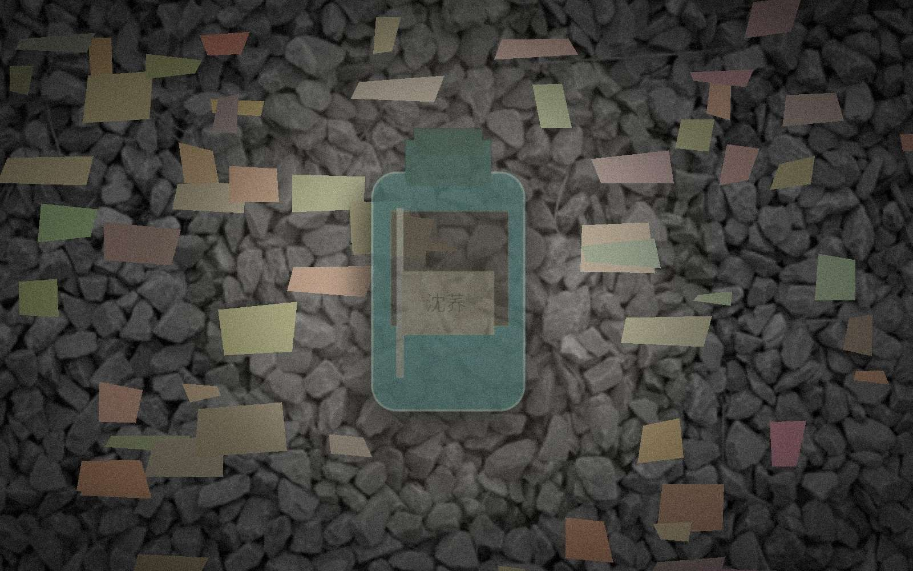

CHUNDENG / FACILITY LOG 2006
engineering terminal - mirror #4
总览
维修单
对讲记录
现场照片
现场照片

C2-0614-03 / 侧门后通道（旧维修留档）
C2-0614-06 / 后场设备值守区。原记录备注称高位检修口没有单独编号。
这组照片原本只是为月底维修留档，没有拍到2006年8月19日事故后的坍塌状态。后续搜寻使用的现场图主要来自消防总图，因此照片中右上方高位结构并未被当作独立空间处理。
关闭